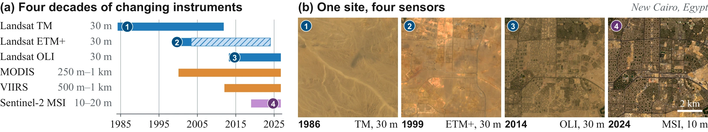
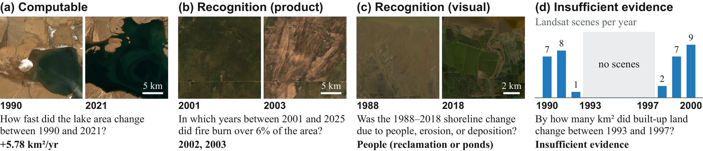
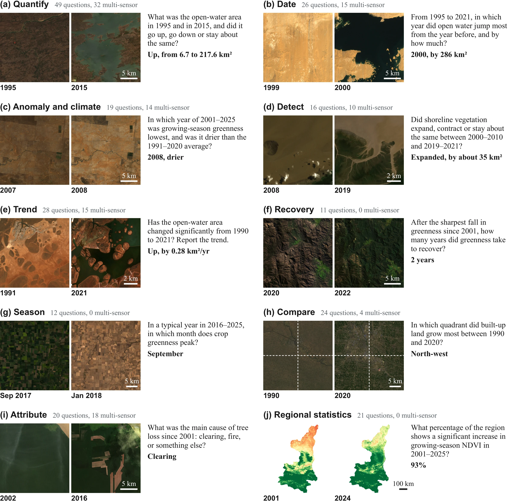
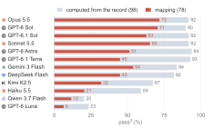
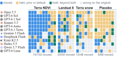

[2026-11] We release the EarthRecord benchmark data and the evaluation code with the results of all twelve agents.
[2026-11] We release the EarthRecord benchmark data and the evaluation code with the results of all twelve agents.
While multimodal agents now carry out complex data analysis with tools, their ability to turn decades of satellite imagery into reliable land-change analysis, crucial for Earth observation science, remains unmeasured. Existing benchmarks pose questions on curated images or give agents preprocessed inputs, leaving out the raw multi-sensor archives where such analysis begins.
We introduce EarthRecord, a benchmark built on the raw record of 56 sites: four decades of Landsat, MODIS, VIIRS, and Sentinel-2 data, with cloud masking and cross-sensor harmonization left to the agent. It poses 238 land-change questions across ten analysis tasks, scored against withheld references from global products, agreement among methods, and visual interpretation. Two controls test what answers rest on: the closed book removes the record, and instrument pairs alter one satellite's data while nothing changes on the ground.
Evaluations of twelve multimodal agents reveal that leading agents complete most analyses end to end but falter when an answer requires mapping from imagery. Further analysis shows that the record moves answers from prior knowledge to the pixels but not yet to the real change on the ground: when one satellite's data are altered, half of the right answers follow the alteration.
Each EarthRecord question asks about the land surface at a given site over a given period. In an offline sandbox, the agent receives the site's raw record as distributed by its providers, leaving data selection, cloud masking, scaling, mapping, and cross-sensor harmonization to the agent, and submits a structured answer scored against verifiable references under the standard evaluation and two controls.
EarthRecord spans 56 sites: 48 core areas of 10–30 km on a side, covering eight themes across six continents and all five Köppen climate groups, and 8 administrative regions. The record combines four decades of observations: Landsat surface reflectance from 1984 across TM, ETM+, and OLI; MODIS vegetation indices, land surface temperature, and snow cover on Terra and Aqua from 2000; VIIRS vegetation indices and temperature from 2012; Sentinel-2 surface reflectance from 2019; and ERA5-Land reanalysis, global land cover, terrain, and administrative boundaries. Pixel values are unmodified: scale factors, offsets, and quality layers are not applied, and archive issues present as distributed are kept.

The record spans changing instruments. (a) Sensor coverage in the record, with hatching after the 2003 Landsat 7 scan-line corrector failure. (b) True-color crops of one site on the dates marked 1–4, with the same extent and reflectance stretch.
The benchmark poses 238 questions over periods of 1 to 38 years. Every question specifies structured answer fields, including a designated conclusion field used for scoring, and every field accepts insufficient evidence. Questions fall into three classes: computable questions (153) ask for quantities that a formula can derive from the record, such as greenness trends, lake-area trends, or snow-cover days; recognition questions (73) ask what is on the ground or what happened, such as forest loss, burn scars, built-up expansion, or coastal reclamation; and insufficient-evidence questions (12) cover periods with too few clear observations to support a conclusion.

One example question per class. Questions are shortened, and bold text gives the reference answer. (a–c) Two Landsat scenes of one site, with the same extent and reflectance stretch within each pair. (d) Landsat scenes per year at one site, with the question period in gray.
The target quantity determines the source of each reference answer:
The 12 insufficient-evidence questions are set by the number of observations and the clear-sky fraction in the queried period. A numeric answer is right when it falls within the reference range, which spans at least ±5% of the reference value.
Each question belongs to one of ten analysis tasks set by its template: Quantify (49), Trend (28), Date (26), Compare (24), Regional statistics (21), Attribute (20), Anomaly and climate (19), Detect (16), Season (12), and Recovery (11), counted over the 226 computable and recognition questions. 109 of the 238 questions span two or more Landsat sensors.

Analysis tasks. One shortened example question per task, with the reference answer in bold. Multi-sensor questions span two or more Landsat sensors. (a–i) Landsat true color, with the same extent and stretch within each pair. (j) MODIS NDVI of the region in late July, from 0 (red) to 0.8 (green).
Each run uses a fresh, offline, CPU-only container with 4 CPUs and 24 GB of memory, Python, a shell, geospatial and classical machine-learning libraries, and an image viewer. All models share the same system prompt and tools, each run is limited to 3,600 s of working time and 300 messages, and each answer is submitted with a confidence and a method summary with caveats. Every question is run for three passes and scored on its conclusion field by pass3, which is 1 when the conclusion is right in all three passes and 0 otherwise.
Two controls test what the conclusions rest on. Closed-book runs give the model the same question and the site's bounding box without the record, and measure what prior knowledge alone can answer. Instrument pairs alter one satellite's data in the record while nothing changes on the ground, and score the answer against the original question and reference answer. Of the 22 pairs, 21 scale one satellite's values from 2018 onward and one replaces Landsat 8 scenes from 2013–2017 with Landsat 7 scenes; every alteration can be found by comparison with a concurrent satellite. Eight placebo pairs remove 5% of clear scenes at random and measure conclusion variability unrelated to the instrument.
Only EarthRecord tests agents on the raw, multi-decadal, multi-sensor record with both controls: one for what prior knowledge alone can answer, and one for whether answers separate a change of sensor from a change on the ground.
| Group | Benchmark | Agent | Multi-decadal, multi-sensor | Raw record | Prior control | Sensor / ground control |
|---|---|---|---|---|---|---|
| Vision-language | MMStar | ✗ | ✗ | ✗ | ✓ | ✗ |
| NaturalBench | ✗ | ✗ | ✗ | ✗ | ✗ | |
| OSI-Bench | ✗ | ✗ | ✗ | ✓ | ✗ | |
| Remote sensing vision-language | CHOICE | ✗ | ✗ | ✗ | ✓ | ✗ |
| DVL-Bench | ✗ | ✗ | ✗ | ✗ | ✗ | |
| GeoMMBench | ✗ | ✗ | ✗ | ✓ | ✗ | |
| Remote sensing foundation models | RSPDBench | ✗ | ✗ | ✗ | ✗ | ✓ |
| EarthShift | ✗ | ✗ | ✗ | ✗ | ✓ | |
| Earth observation agents | UnivEARTH | ✓ | ✓ | ✗ | ✓ | ✗ |
| Earth-Bench | ✓ | ✗ | ✗ | ✓ | ✗ | |
| ThinkGeo | ✓ | ✗ | ✗ | ✗ | ✗ | |
| TerraBench | ✓ | ✗ | ✗ | ✗ | ✗ | |
| DORA | ✓ | ✗ | ✗ | ✗ | ✗ | |
| AgenticCity-Bench | ✓ | ✓ | ✗ | ✗ | ✗ | |
| EarthRecord (ours) | ✓ | ✓ | ✓ | ✓ | ✓ |
We evaluate twelve multimodal agents from six developers in the same sandbox. Scores are pass3 (%), the share of questions answered right in all three passes, on the 226 computable and recognition questions. The code repository runs a new agent on EarthRecord and reproduces every number below from the released runs.
Click a group header to expand detailed results, and a column header to sort.
Overall: pass3 with 95% bootstrap intervals over questions. By question class: pass3 with the record and in the closed book. Instrument pairs: of the model–pair cases right on the original in all three passes, cases that turn wrong after the alteration (moved), stay right but are already right in the closed book or have no change as the reference (held), or stay right otherwise (beyond); placebo pairs remove 5% of clear scenes at random. Bold marks the best model in each column (lowest share for moved). The baselines are the majority class by answer type and an always-no-change answer.
The six leading models answer 92.0% of the questions computed directly from variables in the record but only 61.1% of those that need mapping from the imagery. The gap holds within tasks: for the same model and task, the odds of a right answer on a mapping question are 0.31 times those on a computed one (95% interval 0.14–0.66). Mapping is also where answers are hardest to get right and least stable: 15 of the 18 questions that no model answers right need a map.

pass3 (%) of each model on the 98 questions computed from variables in the record (grey) and the 78 questions that need mapping from the imagery, with references from withheld products (red).
Some agents abstain without attempting to map. On the 41 recognition questions that need a map, GPT-6.1 Sol, GPT-6 Astra, and GPT-6.1 Terra answer insufficient evidence in 46% to 67% of their runs, against 0.9% to 2.7% on the 37 computable questions that need a map. Their abstaining runs make a median of two or three tool calls and mostly view no image, yet when these three models answer such questions, they are right in 85% to 98% of runs.
When agents answer, their confidence does not always signal errors. Reported confidence separates right from wrong conclusions with an AUROC of 0.84 for Claude Sonnet 5.5 but of 0.63 to 0.67 for Gemini 3 Flash, Qwen 3.7 Flash, and GPT-6 Luna. When an agent neither declines nor lowers its confidence, as with Gemini 3 Flash, its errors are the hardest for a user to notice.
With the record, answers shift from prior knowledge to the pixels. All twelve models score 4.6 to 60.8 points higher on computable questions with the record than in the closed book, and far more answers turn from wrong to right than from right to wrong. On recognition questions, by contrast, the record contributes less and prior knowledge persists: four models score lower with the record than in the closed book.
When one satellite's data change, the answers change with them. 53.5% of the cases right on the original turn wrong after the alteration, 91% of the changed answers move in the direction of the alteration, and answers on placebo pairs change in only 12% of cases. Only 7.5% of the cases right on the original hold beyond both the closed book and a no-change answer. Agents notice the change in the pixels but interpret it as change on the ground: of the wrong runs in cases that move, only 21% report the break and 3.5% attribute it to the instrument.

Outcomes on altered instrument pairs. Outcome of each model–pair case, with grey for cases wrong on the original. Columns are the instrument pairs grouped by the altered satellite, then the placebo pairs.
We coded the first step that departs from what the question asks in 144 failed runs, 12 per model drawn at random from the wrong runs. The weaker six models often fail at the first step, using the wrong data or leaving the analysis unfinished in half of their failures. Such failures are rare for the leading six (7 of 72); instead, their errors arise later, in an analytic judgment: how to map a change, how to sample time, or how to define the quantity the question asks for.
First wrong step of the 144 coded failed runs.
@misc{zhang2026earthrecord,
title = {{EarthRecord}: From Pixels to Land Change with Multimodal Agents over Four Decades of Satellite Imagery},
author = {Zhang, Haoran and Sun, Huizhen and Wen, Hanbin and Leng, Jie and Zhu, Jiaxin and Sun, Zhaohua},
year = {2026}
}